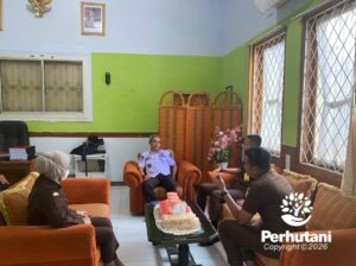

TASIKMALAYA, PERHUTANI (29/01/2026) | Perum Perhutani KPH Tasikmalaya melaksanakan kegiatan koordinasi terkait penanganan Perkara Tata Usaha Negara (PTUN) bersama Kejaksaan Negeri Kabupaten Tasikmalaya, bertempat di Kantor Perum Perhutani KPH Tasikmalaya, Senin (26/1), sebagai langkah antisipatif dan preventif guna mendukung terwujudnya tata kelola hutan yang baik.
Kegiatan koordinasi tersebut dihadiri oleh Administratur Perhutani/KKPH Tasikmalaya Danu Prasetyo yang didampingi oleh Kepala Sub Seksi Hukum, Kepatuhan, Agraria dan Komunikasi Perusahaan (KSS HKAKP) Salim. Dari pihak Kejaksaan Negeri Kabupaten Tasikmalaya hadir Kepala Seksi Perdata dan Tata Usaha Negara (Kasi Datun), Ferdy Setiawan beserta jajaran.
Koordinasi ini dilaksanakan sebagai upaya penyamaan persepsi dan penguatan sinergi antarinstansi apabila di kemudian hari terdapat potensi atau dinamika hukum di bidang Tata Usaha Negara, khususnya yang berkaitan dengan pelaksanaan tugas dan kewenangan Perum Perhutani di wilayah KPH Tasikmalaya.
Administratur/KKPH Tasikmalaya Danu Prasetyo menyampaikan bahwa hingga saat ini tidak terdapat perkara PTUN yang sedang berjalan atau dihadapi oleh Perhutani KPH Tasikmalaya. Kegiatan koordinasi ini dilakukan semata-mata sebagai bentuk kesiapsiagaan dan penguatan tata kelola hukum perusahaan. “Koordinasi ini bersifat preventif. Sampai saat ini tidak ada perkara PTUN yang terjadi, namun Perhutani perlu memastikan bahwa setiap kebijakan dan tindakan pengelolaan hutan telah sesuai dengan ketentuan hukum yang berlaku, guna mewujudkan tata kelola hutan yang baik,” ujar Danu.
Sementara itu, Kasi Datun Kejaksaan Negeri Kabupaten Tasikmalaya, Ferdy Setiawan, menyampaikan bahwa pihaknya siap memberikan pendampingan dan bantuan hukum kepada Perum Perhutani apabila diperlukan di kemudian hari, sesuai dengan kewenangan di bidang Perdata dan Tata Usaha Negara. “Koordinasi seperti ini penting sebagai langkah awal untuk membangun pemahaman bersama, sehingga apabila terdapat persoalan hukum di kemudian hari, penanganannya dapat dilakukan secara tepat, profesional, dan sesuai aturan,” ungkap Ferdy Setiawan.
Melalui kegiatan koordinasi ini, Perum Perhutani KPH Tasikmalaya dan Kejaksaan Negeri Kabupaten Tasikmalaya menegaskan komitmen bersama dalam membangun sinergi kelembagaan yang berkelanjutan, sebagai bagian dari penguatan tata kelola hutan yang transparan, akuntabel, dan berkeadilan.
Editor: WK
Copyright © 2026 Warta Nusantara Barat